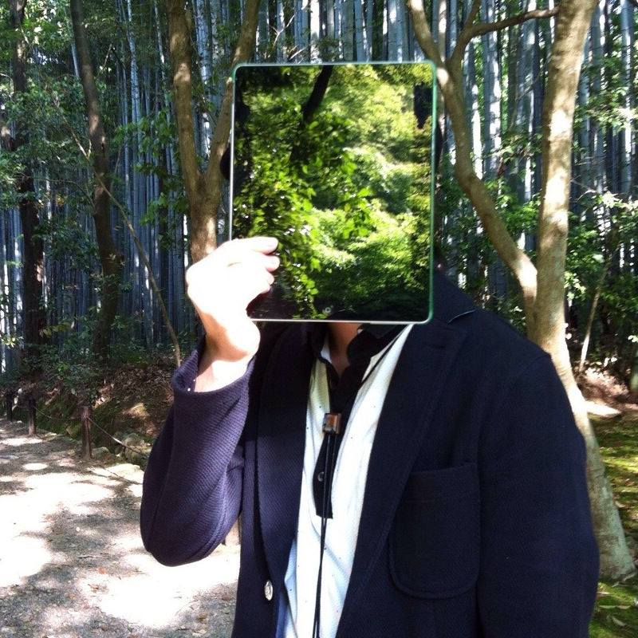
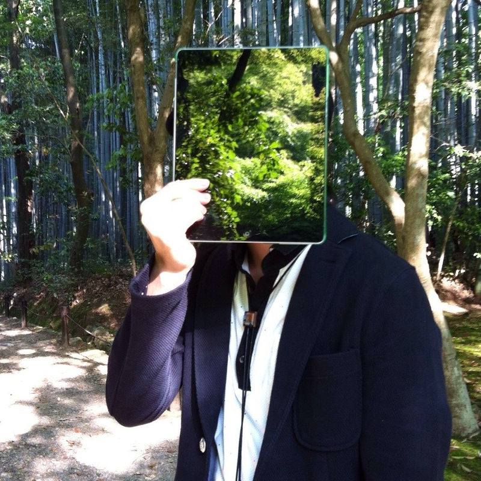

Ca5
かご, /kago/
Otherman Records Key Memberの一人。
Chipbreakを中心とした曲作りや、
Max/MSPを利用した複数デバイス+複数ソフトウェアを連携させる仕組みを考えたりするのを得意とする。

楽曲制作やライブ出演などご連絡はメール(ca54makske@yahoo.co.jp) or @Ca5まで
Otherman Records Key Memberの一人。
Chipbreakを中心とした曲作りや、
Max/MSPを利用した複数デバイス+複数ソフトウェアを連携させる仕組みを考えたりするのを得意とする。

楽曲制作やライブ出演などご連絡はメール(ca54makske@yahoo.co.jp) or @Ca5まで